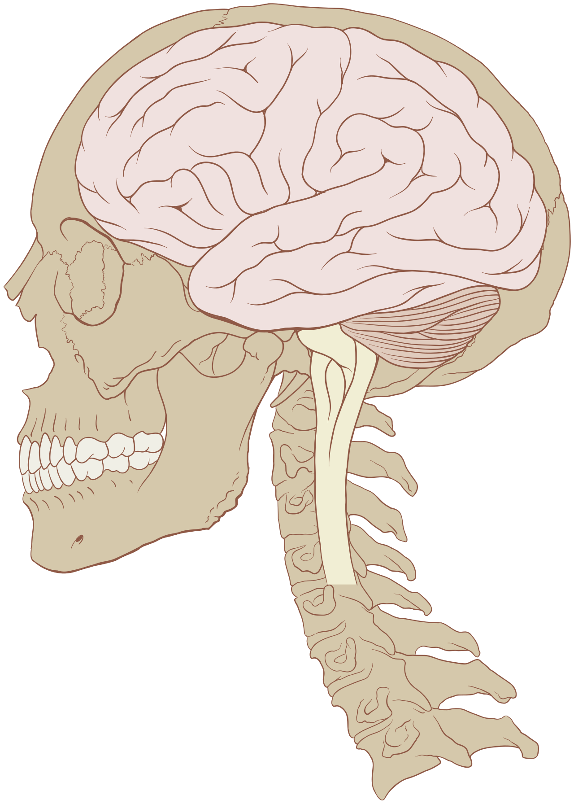

神经系统的分级调节
本期导读
运动区 · 排尿反射 · 病例分析

视频原话 · 导读3 句
- 同学们好！这节课梳理人教版选择性必修一第二章第四节——神经系统的分级调节。8.2s
- 这一节常考大脑皮层运动区的特点、排尿反射的分级调节，以及与排尿相关的病例分析。8.1s
- 我们按六个考点梳理，每个考点都讲清楚怎么考、怎么做。5.5s
大脑皮层第一运动区01#
位置：中央前回
▲ 顶部
下肢
躯干
上肢
手指
眼
唇
舌
▼ 底部
① 整体倒置：下肢在顶部，头面部在底部
② 头面部内部正立：眼在口的上方
③ 代表区大小取决于运动的精细程度，与躯体大小无关
易错
除头面部外为交叉支配：刺激右侧运动区 → 左侧肢体运动
视频原话6 句
- 考点一，大脑皮层第一运动区。它位于中央前回，刺激它的不同部位，会引起身体相应部位的运动。9.4s
- 第一个特点：代表区的位置与躯体的关系是倒置的。下肢的代表区在顶部，头面部的代表区在底部。9.7s
- 不过头面部内部是正立的，比如眼的代表区在口的上方。5.6s
- 第二个特点：代表区的大小与躯体的大小无关，而与躯体运动的精细程度有关。手指、唇和舌的代表区特别大。10.8s
- 右边这个比例夸张的“小人”，就是按各部位代表区的大小画出来的。6.1s
- 易错：除头面部外，大脑皮层对躯体运动是交叉支配的：刺激右侧运动区，引起的是左侧肢体的运动。10.0s
躯体运动的分级调节02#
大脑皮层
最高级中枢：发出指令
↓ 调控
脑干、小脑
连接上下；协调运动、维持平衡
↓ 调控
脊髓
低级中枢：直接支配肌肉
考法
核心：低级中枢受高级中枢调控；见到“受大脑皮层控制”就想到分级调节
视频原话4 句
- 考点二，躯体运动的分级调节。躯体的运动受大脑皮层、脑干、{小脑|brown}和脊髓等共同调控。9.1s
- 脊髓是机体运动的低级中枢，直接支配肌肉的运动；脑干连接低级中枢和高级中枢；{小脑|brown}协调运动、维持身体平衡。11.4s
- 大脑皮层是最高级中枢，它发出的指令通过脑干、脊髓传到肌肉，使运动更加有条不紊、精准。9.5s
- 考法：分级调节的核心是低级中枢受高级中枢的调控。题目中出现“受大脑皮层控制”，就要想到分级调节。10.8s
排尿反射的分级调节03#
膀胱充盈 → 感受器兴奋 → 传入神经 → 脊髓排尿中枢
→ 传出神经 → 膀胱收缩、排尿
→ 上传到大脑皮层 → 产生尿意
大脑皮层可通过脊髓控制排尿（“憋尿”）
考法
低级中枢在脊髓，高级中枢在大脑皮层，脊髓受大脑皮层调控
视频原话5 句
- 考点三，内脏活动的分级调节，最典型的例子是排尿反射。6.1s
- 排尿反射的低级中枢在脊髓。膀胱充盈时，膀胱壁内的感受器兴奋，经传入神经传到脊髓的排尿中枢。10.7s
- 兴奋一方面经传出神经引起膀胱收缩、排尿；另一方面经脊髓上传到大脑皮层，产生尿意。9.6s
- 大脑皮层可以通过脊髓控制排尿：有了尿意，如果条件不允许，人可以有意识地“憋尿”。8.2s
- 考法：排尿反射的低级中枢在脊髓，高级中枢在大脑皮层，脊髓的活动受大脑皮层调控。9.1s
排尿相关的病例分析04#
关键：大脑皮层与脊髓之间的联系是否完好
| 情况 | 原因 | 能否排尿 | 能否有意识控制 |
|---|---|---|---|
| 成人 | 脊髓低级中枢受大脑皮层调控 | ✓ 能 | ✓ 能 |
| 婴儿遗尿 | 大脑发育尚未完善 | ✓ 能 | ✗ 较弱 |
| 截瘫病人 | 脊髓受伤，与大脑皮层的联系中断 | ✓ 能 | ✗ 不能（尿失禁） |
解题方法
能否排尿 → 看脊髓的反射弧；能否有意识控制 → 看大脑皮层与脊髓的联系（惊吓时尿失禁同理）
视频原话5 句
- 考点四，病例分析。关键看大脑皮层与脊髓之间的联系是否完好。7.1s
- 成人能有意识地控制排尿，因为脊髓的低级中枢受大脑皮层调控。6.5s
- 婴儿经常尿床，是因为大脑发育尚未完善，对排尿的控制能力较弱。6.6s
- 截瘫病人脊髓受伤，大脑皮层与脊髓的联系中断，会出现尿失禁；但脊髓的排尿中枢完好，所以仍能排尿，只是不受意识控制。12.0s
- 解题方法：能不能排尿，看脊髓的反射弧是否完整；能不能有意识地控制，看大脑皮层与脊髓的联系。成人受惊吓时尿失禁，也是大脑暂时失去了对脊髓的控制。15.3s
自主神经并不完全自主05#
内脏活动的分级调节
脊髓低级中枢（排尿、排便等）
脑干呼吸、心脏功能的基本中枢
下丘脑较高级中枢
大脑皮层最高级中枢
排尿：副交感神经兴奋 → 膀胱缩小；交感神经兴奋不会使膀胱缩小；受大脑皮层控制
紧张时心跳加快、手心出汗 → 内脏活动受情绪影响
易错
“自主” = 不受意识直接支配，不等于不受高级中枢调控
视频原话5 句
- 考点五，自主神经系统并不完全“自主”。4.2s
- 内脏活动同样存在分级调节：脊髓是低级中枢，脑干有调节呼吸、心脏功能的基本中枢，{下丘脑|brown}是较高级中枢，大脑皮层是最高级中枢。13.6s
- 比如排尿时，副交感神经兴奋使膀胱缩小，交感神经兴奋不会导致膀胱缩小，而这一过程又受大脑皮层控制。10.9s
- 再比如，人紧张时会心跳加快、手心出汗，说明内脏活动也会受到情绪的影响。8.2s
- 易错：“自主”是指活动不受意识直接支配，并不是说它不受高级中枢调控。7.4s
感觉在大脑皮层形成06#
所有感觉（痛觉、冷觉、渴觉……）都在大脑皮层形成
产生痛觉
- 感受器
- →传入神经
- →脊髓
- →大脑皮层：痛觉
传出神经
效应器
反射弧不完整 → 不属于反射
缩手反射（中枢在脊髓）
- 感受器
- →传入神经
- →脊髓
- →传出神经
- →效应器：缩手
易错
缩手的路径短，上传到大脑皮层的路径长 → 先缩手，后感到疼
视频原话4 句
- 考点六，感觉在哪里形成？痛觉、冷觉、渴觉等所有感觉，都在大脑皮层形成。8.3s
- 比如手被针扎，兴奋经传入神经到脊髓，再上传到大脑皮层，产生痛觉。7.5s
- 注意，感觉的形成不属于反射：它只经过感受器、传入神经和神经中枢，没有经过传出神经和效应器，反射弧不完整。11.4s
- 易错：缩手反射的中枢在脊髓，路径短；兴奋上传到大脑皮层的路径长，所以人往往先缩手、后感到疼。10.7s
易错速查✓
先自己判断，再点按钮查看对错与解析。
- 1刺激中央前回的顶部，可引起头面部运动说法错误：引起下肢运动（倒置）
- 2运动越精细的部位，代表区越大说法正确。
- 3排尿反射的高级中枢在脊髓说法错误：低级中枢在脊髓，高级中枢在大脑皮层
- 4婴儿遗尿是因为大脑发育尚未完善说法正确。
- 5自主神经系统的活动不受大脑皮层调控说法错误：也受大脑皮层等高级中枢调控
- 6手被针扎产生痛觉，属于反射说法错误：反射弧不完整，不属于反射
高级调控低级，病例题一看就懂！
视频原话 · 易错速查5 句
- 最后，用六道判断题检验一下。3.6s
- 刺激中央前回的顶部，可引起头面部运动？错，引起的是下肢运动。运动越精细的部位，代表区越大？对。11.2s
- 排尿反射的高级中枢在脊髓？错，低级中枢在脊髓，高级中枢在大脑皮层。婴儿遗尿是因为大脑发育尚未完善？对。12.9s
- 自主神经系统的活动不受大脑皮层调控？错。手被针扎产生痛觉，属于反射？错，反射弧不完整。10.8s
- 六个考点串起来：高级中枢调控低级中枢，记住运动区倒置、排尿的两级中枢，病例题就能一眼看穿。掌握这些，这一节就能稳稳拿分！我们下期再见！15.1s
图片来源
图片来源：Wikimedia Commons —— Patrick J. Lynch《Skull and brain normal human》CC BY 2.5；《Motor homunculus》（据 Penfield & Rasmussen 1950 绘制）CC BY-SA 4.0
Image: Patrick J. Lynch, CC BY 2.5